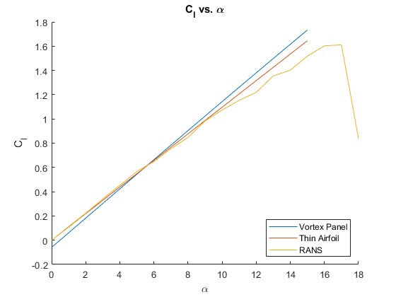

ASEN 3111 - Computational Assignment 03 - Main
Produces the lift coefficients and pressure distributions about four NACA airfoils and compares them to thin airfoils
Author: Samuel Razumovskiy Collaborators: A.Elsayed Date: 11/8/2019 (last revised: 11/21/2019)
Contents
(Knock knock) House keeping
clear,clc,close all
Problem 1
T = readtable('Cl and Cd.xlsx','Range','D:E'); m = 0; p = 0; t = 12; c = 1; N = 150; M = N-2; v_inf = 52.06373; [x,y,yc] = NACA_Airfoils(m,p,t,c,N); alphas = linspace(0,15); for j = 1:numel(alphas) alpha = alphas(j)*pi/180; [cl(j)] = Vortex_Panel(alpha,v_inf,c,x,y,M); end % Calculating the dz_dx dz_dx = 0; % Calculating theta theta = acos(1-2*x(1:N/2)/c); % Finding the midpoints of theta thetamid = (theta(2:end)+theta(1:end-1))/2; % Calculating the thin airfoil alpha L=0 thinalpha = 1/pi.*trapz(thetamid,dz_dx.*(cos(thetamid)-1)); % Finding the slope and y intercept of the thick airfoil data fun = polyfit(alphas*pi/180,cl,1); % Finding the x intercept of the thick airfoil data alphal0 = (-fun(2)/fun(1)); % Slope of the CFD data a = polyfit(T.AoA(6:end)*pi/180,T.Cl(6:end),1); [maxCl,I] = max(T.Cl); maxAlpha = T.AoA(I); fprintf('Lift slope of the CFD data = %1.2f\n',a(1)) fprintf('Stall angle of attack = %1.2f\n',maxAlpha) fprintf('Maximum Cl = %1.2f\n',maxCl) thinCl = 2*pi.*alphas*pi/180; figure hold on plot(alphas,cl) plot(alphas,thinCl) plot(T.AoA,T.Cl) title('C_l vs. \alpha') xlabel('\alpha') ylabel('C_l') legend('Vortex Panel','Thin Airfoil','RANS','location','southeast')
Lift slope of the CFD data = 5.91 Stall angle of attack = 17.00 Maximum Cl = 1.61